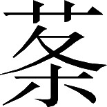

吴书 · 卷十九
诸葛滕二孙濮阳传第十九
诸葛恪，字元逊，是诸葛瑾的大儿子。他年轻时就有名。二十岁左右他被任命为骑都尉，与顾谭、张休等人，陪同太子孙登讲论儒家的理论和技艺，都是孙登的宾客和朋友。后来他从太子中庶子这一官职转任太子左辅都尉。
诸葛恪的父亲诸葛瑾面孔较长，就像驴脸一样。有一次孙权会见大批臣僚，叫人牵了一头驴进来，在驴脸上挂了一条长标签，上面写着“诸葛子瑜”四个字。诸葛恪一看这是父亲的姓和字，就跪下说：“请求给我一支笔添上两个字。”孙权准许给他一支笔。诸葛恪就在标签下面添了“之驴”两个字。在座的人看了都欢笑不已，孙权随即把这头驴赏赐给机敏的诸葛恪。
另外一天孙权又会见群臣，孙权问诸葛恪：“你的父亲与你叔父诸葛孔明相比，谁更贤能？”他回答道：“为臣的父亲更好。”孙权问他为什么，诸葛恪说：“为臣的父亲知道自己该为谁服务，而叔父不知道：因此父亲更好。”孙权又哈哈大笑。
接着让诸葛恪为在座者依次斟酒，到了老臣张昭面前；张昭已经浮现出酒醉的脸色，不肯喝，并且说：“这不是照顾老年人的礼节啊。”孙权说：“你要是能使张公理屈辞穷，他就该喝。”诸葛恪马上问张昭：“从前吕望在九十岁时，还右手拿着有旄牛尾装饰的军旗而左手持大斧，担任军队主帅，也并没有说自己年老。而今军事上的行动，将军您处在后面；而享受美酒佳肴时，将军您又排在最先：怎么能说是不照顾老年人呢？”结果张昭无言以对，只好满饮一杯。
后来蜀国的使者到达，吴国群臣一齐来参加会见。孙权对使者说：“这位诸葛恪素来喜欢骑马，请您回去转告诸葛丞相：为他送一批好马来。”诸葛恪一听立即跪下向孙权表示谢意，孙权说：“马还没有送到，你为什么就道谢啊？”诸葛恪回答说：“蜀国，不过是陛下在外边的马棚；如今既有诏令，好马必定会送到：为臣岂敢不谢呢？”
恪之才捷，皆此类也。﹝二﹞
诸葛恪应变才能的敏捷，都像这类事例所显示的情况。
裴注
裴注 ﹝二﹞
《恪别传》曰：“权尝飨蜀使费祎，先逆敕群臣：‘使至，伏食勿起！’祎至，权为辍食，而群下不起。祎啁之曰：‘凤凰来翔，骐T吐哺；驴骡无知，伏食如故。’恪答曰：‘爰植梧桐，以待凤凰；有何燕雀，自称来翔？何不弹射，使还故乡！’祎停食饼，索笔作麦赋；恪亦请笔，作磨赋：咸称善焉。权尝问恪：‘顷何以自娱，而更肥泽？’恪对曰：‘臣闻富润屋，德润身；臣非敢自娱，修己而已。’又问：‘卿何如滕胤？’恪答曰：‘登阶蹑履，臣不如胤；回筹转策，胤不如臣。’恪尝献权马，先 其耳。范慎时在坐，嘲恪曰：‘马虽（大）〔六〕畜，禀气于天；今残其耳，岂不伤仁？’恪答曰：‘母之于女，恩爱至矣；穿耳附珠，何伤于仁？’太子尝嘲恪：‘诸葛元逊可食马矢。’恪曰：‘愿太子食鸡卵。’权曰：‘人令卿食马矢，卿使人食鸡卵：何也？’恪曰：‘所出同耳。’权大笑。”
《江表传》曰：“曾有白头乌集殿前。权曰：‘此何鸟也？’恪曰：‘白头翁也。’张昭自以坐中最老，疑恪以鸟戏之。因曰：‘恪欺陛下，未尝闻鸟名白头翁者！试使恪复求白头母。’恪曰：‘鸟名鹦母，未必有对；试使辅吴，复求鹦父。’昭不能答，坐中皆欢笑。”
诸葛恪认为：“丹杨郡的险要山区，居民大多果敢劲悍，虽然此前也在这里征调了一批壮丁当兵，但是只得到了山区外围各县的平民而已；其余在遥远深山当中活动的山越族人，并没有完全俘获。”所以他多次请求，让自己去为公家把山越族人围取出来，并估计三年间可以得到穿铠甲的士兵四万人。
众人的议论都认为：“丹杨郡的地势多有险山阻隔，又和吴、会稽、新都、鄱阳四郡连接，周围绵延几千里，千山万谷；在幽深山区的人民，从来没有进过城镇，更没有见过县级行政长官，都手持兵器在野外跑来跑去，老死在森林树丛当中。而从平原地区逃跑的百姓和士兵，长期作乱的匪徒，都一起窜进那里的深山藏身。山中出产铜铁，可以自己铸造兵器制作铠甲。那里的风俗好武善战，重视胆气和力量；他们爬高山过险路，穿丛林冲荆棘，就好比鱼儿游深渊，猴子上高树那么自由随便。他们常常窥测机会，出山来抢掠攻杀；每每迫使朝廷出兵去讨伐，寻找他们的巢穴。他们在打胜仗时蜂拥而上，一旦打败就作鸟兽散。自汉朝以来，就把他们约束不住。”众人都觉得诸葛恪的想法难以实现。
诸葛恪却极力陈述事情必定成功。孙权就任命诸葛恪为抚越将军，兼丹杨郡太守，授予他棨戟之类的仪仗器物，以及一支由三百名武勇骑兵组成的卫队。任命仪式举行完毕，又让诸葛恪备齐显示声威的仪仗队，鼓乐齐鸣，充当前导带领他回家。这一年他三十二岁。
诸葛恪到达了丹杨郡自己的军政府署，立即发布公文给吴、会稽、新都、鄱阳四郡下属各县的行政长官。命令他们各自保卫自己的边界，划分片区并建立军事化的组织；山区外围服从政府教化的平民，全部编入军事化组织集中在营寨中居住。然后才分别部署众将进入山区，布置士兵在深山的险阻要地驻扎。只在营地周围修造坚固的围栅，而不与山里的武装力量交战。等到山中种植的谷物快要成熟时，就出动军队收割一空，连一颗种子都不留下。山中的居民吃完了以往储存的粮食，田里种的谷物又颗粒无收；而山区外围的居民全部集中在军营中，从他们那里也搞不到一点粮食。他们被饥饿逼得走投无路，只好逐渐出来投降自首。
诸葛恪这时又下达指令说：“山中居民改恶从善，都应当安抚慰问，然后迁到外面各县安置；不准对他们产生顾忌怀疑，进行捆绑拘捕。”丹阳县长胡伉，得到一名投降者叫周遗。周遗是一贯作恶的家伙，被逼得没有办法才暂时出来投降，心里一直打算再造反。所以胡伉把他捆上送到诸葛恪的军府，诸葛恪因为胡伉违反自己的指令，立即将其斩首并在各地示众。同时把情况上报朝廷。山中居民听说胡伉因为捆绑人被处死，知道官方只是想把自己弄出山区而已；于是全都扶老携幼而出。整个军事行动所花费的时间、取得的人数都符合诸葛恪原先的预计。诸葛恪自己统领了其中的一万新兵，其余的都分给了吴军众将。
权嘉其功，遣尚书仆射薛综劳军。综先移恪等曰〖26〗：“山越恃阻，不宾历世〖27〗；缓则首鼠〖28〗，急则狼顾〖29〗。皇帝赫然，命将西征；神策内授，武师外震。兵不染锷〖30〗，甲不沾汗；元恶既枭，种党归义〖31〗；荡涤山薮，献戎十万〖32〗。野无遗寇，邑罔残奸；既扫凶慝〖33〗，又充军用。藜 稂莠〖34〗，化为善草；魑魅魍魉〖35〗，更成虎士〖36〗。虽实国家威灵之所加，亦信元帅临履之所致也〖37〗。虽《诗》美执讯〖38〗，《易》嘉折首〖39〗；周之方、召〖40〗，汉之卫、霍〖41〗：岂足以谈？功轶古人〖42〗，勋超前世。主上欢然，遥用叹息。感《四牡》之遗典〖43〗，思饮至之旧章〖44〗；故遣中台近官〖45〗，迎致犒赐：以旌茂功，以慰劬劳〖46〗。”
稂莠〖34〗，化为善草；魑魅魍魉〖35〗，更成虎士〖36〗。虽实国家威灵之所加，亦信元帅临履之所致也〖37〗。虽《诗》美执讯〖38〗，《易》嘉折首〖39〗；周之方、召〖40〗，汉之卫、霍〖41〗：岂足以谈？功轶古人〖42〗，勋超前世。主上欢然，遥用叹息。感《四牡》之遗典〖43〗，思饮至之旧章〖44〗；故遣中台近官〖45〗，迎致犒赐：以旌茂功，以慰劬劳〖46〗。”
稂莠〖34〗，化为善草；魑魅魍魉〖35〗，更成虎士〖36〗。虽实国家威灵之所加，亦信元帅临履之所致也〖37〗。虽《诗》美执讯〖38〗，《易》嘉折首〖39〗；周之方、召〖40〗，汉之卫、霍〖41〗：岂足以谈？功轶古人〖42〗，勋超前世。主上欢然，遥用叹息。感《四牡》之遗典〖43〗，思饮至之旧章〖44〗；故遣中台近官〖45〗，迎致犒赐：以旌茂功，以慰劬劳〖46〗。”孙权赞赏他的功劳，特派尚书仆射薛综去慰劳参加这次行动的军队。薛综先给诸葛恪等将领送去一封文书说：“山越族人仗恃险阻地形，不服从统治已经持续了不止一个朝代；形势缓和时就蠢蠢欲动，情况紧急时就回头逃跑。皇帝勃然发怒，命令大将到西面征讨；神妙的计策在朝廷内授给，威武的大军在朝廷外出动。兵不血刃，甲不沾汗；不仅元凶被诛杀，而且部落和同党全部向官方投诚；深山地区被清洗干净，向朝廷献上的精兵达到十万。野外没有遗留的匪徒，城镇没有残存的坏蛋。既扫除了凶恶，又补充了兵员。藜、 、稂、莠之类的有害植物，都变成了好草；魑魅魍魉之类的精怪，都变成了像猛虎一样的战士。虽然这实在是国家的神威在起决定作用，但也的确有统帅亲临指挥的功劳。即使是《诗经•采芑》一诗赞美抓住了罪魁，《周易•离卦》颂扬捕获了祸首，或者是周朝的方叔、召虎，汉朝的卫青、霍去病，岂能与你们相提并论？你们的功勋盖过了古人，超越了前代。圣上喜悦，遥遥为此赞叹不已。他有感于《诗经•四牡》一诗中君主慰劳臣下的古代制度，又想到《左传》中举行酒宴庆祝将士凯旋的古代礼仪；所以特派尚书台的近臣，前来迎接犒劳你们：以表彰大功，慰问辛劳！”
、稂、莠之类的有害植物，都变成了好草；魑魅魍魉之类的精怪，都变成了像猛虎一样的战士。虽然这实在是国家的神威在起决定作用，但也的确有统帅亲临指挥的功劳。即使是《诗经•采芑》一诗赞美抓住了罪魁，《周易•离卦》颂扬捕获了祸首，或者是周朝的方叔、召虎，汉朝的卫青、霍去病，岂能与你们相提并论？你们的功勋盖过了古人，超越了前代。圣上喜悦，遥遥为此赞叹不已。他有感于《诗经•四牡》一诗中君主慰劳臣下的古代制度，又想到《左传》中举行酒宴庆祝将士凯旋的古代礼仪；所以特派尚书台的近臣，前来迎接犒劳你们：以表彰大功，慰问辛劳！”
、稂、莠之类的有害植物，都变成了好草；魑魅魍魉之类的精怪，都变成了像猛虎一样的战士。虽然这实在是国家的神威在起决定作用，但也的确有统帅亲临指挥的功劳。即使是《诗经•采芑》一诗赞美抓住了罪魁，《周易•离卦》颂扬捕获了祸首，或者是周朝的方叔、召虎，汉朝的卫青、霍去病，岂能与你们相提并论？你们的功勋盖过了古人，超越了前代。圣上喜悦，遥遥为此赞叹不已。他有感于《诗经•四牡》一诗中君主慰劳臣下的古代制度，又想到《左传》中举行酒宴庆祝将士凯旋的古代礼仪；所以特派尚书台的近臣，前来迎接犒劳你们：以表彰大功，慰问辛劳！”注释
注释 〖26〗
移：不相统属的官署之间所发送的公文叫做移。这里作动词，即发送移文。
注释 〖27〗
不宾：不服从。
注释 〖28〗
首鼠：即首鼠两端的省略。这里指蠢蠢欲动。
注释 〖29〗
狼顾：狼行走时常回头后顾，称为狼顾。这里比喻回头逃跑。
注释 〖30〗
兵不染锷：兵器的锋刃上没有染上血迹。
注释 〖31〗
种：部落。
注释 〖32〗
戎：兵。
注释 〖33〗
凶慝（tè）：凶恶。
注释 〖34〗
藜（lí）：一年生草本植物。嫩叶可吃，老茎可做拐杖。

（tiāo）：一种草名。稂（láng）：一种对禾苗有害的杂草。俗称狼尾草。莠（yǒu）：一种对禾苗有害的杂草，欲称狗尾草。注释 〖35〗
魑（chī）魅：传说中能伤害人的怪物。魍魉（wǎng liǎng）：传说中木石化成的精怪。
注释 〖36〗
虎士：像猛虎一样的战士。
注释 〖37〗
信：确实（是）。
注释 〖38〗
执讯：抓住了应当接受审讯的罪魁。《诗经•采芑》歌颂西周方叔征伐反抗的楚国，有“执讯获丑”的句子。
注释 〖39〗
折首：诛杀叛乱的首领。《周易•离卦》爻辞有“王用出征，有嘉折首”的句子。
注释 〖40〗
方：即方叔。西周宣王时的大臣。曾率兵击败反抗的楚国，又曾进攻 狁。召（shào）：即召虎。召公奭的后代。周宣王时的大臣。曾率军战胜淮夷。遗物有“召伯虎簋”。
狁。召（shào）：即召虎。召公奭的后代。周宣王时的大臣。曾率军战胜淮夷。遗物有“召伯虎簋”。
狁。召（shào）：即召虎。召公奭的后代。周宣王时的大臣。曾率军战胜淮夷。遗物有“召伯虎簋”。注释 〖41〗
卫：即卫青（？—前 106）。字仲卿。河东郡平阳（今山西临汾市西南）人。以外戚受到西汉武帝重用，官至大将军，封长平侯。多次率军进攻匈奴，建立战功，消除了匈奴对西汉王朝的严重威胁。传见《史记》卷一百一十一、《汉书》卷五十五。霍：即霍去病。
注释 〖42〗
轶（yì）：超过。
注释 〖43〗
《四牡》：《诗经•小雅》中的一篇。《毛诗序》认为这首诗主题是君主慰劳臣下，但现今学者的解释与此不同。
注释 〖44〗
饮至：古代礼仪名。出征凯旋归来，到宗庙向祖先报捷，然后饮酒庆贺，论功行赏，称为饮至。见《左传》桓公二年、隐公三年。
注释 〖45〗
中台：尚书台。因设在皇宫中，故名。近臣：指薛综自己。
注释 〖46〗
劬（qú）劳：辛苦劳累。
拜恪威北将军〖47〗，封都乡侯。
接着孙权提升诸葛恪为威北将军，封都乡侯。
注释
注释 〖47〗
威北将军：官名。领兵与曹魏作战。
诸葛恪请求率领军队到庐江郡的皖口驻扎并进行屯田。此间他曾出动一支轻装部队偷袭舒县，把那里的魏国百姓抢了一批回来；他又远远派出侦察兵，观察道路和要地，打算进攻魏国的寿春。而孙权认为不行没有批准。
赤乌年间，魏国大将司马懿制定计谋想进攻诸葛恪；孙权正要出兵应战，观望云气的人认为这一战对吴方不利，于是孙权让诸葛恪把营地转移到了柴桑以避开。
与丞相陆逊书曰：
在柴桑这里诸葛恪曾给丞相陆逊写信说：
杨敬叔最近转述了您的高雅谈论，说您认为：“当今的优秀人物死亡殆尽，而能够保持品德修养的人不会再有多少了；应当相互帮助，形成彼此依存的亲密关系；对上振兴国家的事业，对下珍惜真挚的友谊。您又愤恨当今的社会风俗喜欢诽谤诋毁别人，使得已经成器的人才，中途受到损害；而那些正在进取的人，受到诽谤诋毁后更是郁郁寡欢。”我听到这些话之后不禁喟然叹息，独自拍着手赞赏不已。
我的愚见认为，君子不会对一个人求全责备。就以孔子的门徒而论，大概的人数虽然有三千之多，其中受到特别器重的也不过七十二人；即使是子张、子路、子贡等列入七十二人当中的门徒，具有仅次于圣人孔子的品德，也依然各有短处，比如子张个性偏激，子路为人鲁莽，子贡不接受孔子的教命。何况是那些不如他们的人，怎么会完美无缺呢？孔子并没有计较这些弟子的不完美而依然与他们友好相处，也并没有因为别人有短处而抹杀了他们的长处。
注释
注释 〖14〗
大数三千：相传孔子教授的弟子累计有三千人，其中身通礼、乐、射、御、书、数六艺的优秀学生有七十二人。见《史记》卷四十七《孔子世家》。
注释 〖15〗
见异者：受到特别器重者。
注释 〖16〗
子张：即颛孙师（前 503—？）。字子张。陈国人。子路：即仲由（前 542—前 480）。字子路。卞（在今山东泗水县东南）人。子贡：即端木赐（前 520—？）。字子贡。以上三人传均见《史记》卷六十七《仲尼弟子列传》。
注释 〖17〗
亚圣：仅次于圣人（孔子）。
注释 〖18〗
师辟由喭（yàn）：颛孙师偏激，仲由鲁莽。赐不受命：端木赐不接受（孔子的）教命。以上两句都是《论语•先进》中的话。
注释 〖19〗
下此：比这些人低下。
而且当今选取人才，标准还应当比以往的古代放宽。为什么呢？因为政务交错繁杂，而好的人才又少；国家的职官，经常都苦于后备人选不充足。所以只要是品性不邪恶，立志为国效力的人；就可以勉励成就他们，让他们在职位上充分施展。至于在细小的举止仪态、个人品行上有所不足，都应当加以宽容，不必一一苛求责备。况且人才也确实不能够过细评论和苛刻要求，要求苛刻了连那些圣贤都难以保证自己不受挑剔，更不用说与圣贤有差距的人了。所以说用原则来衡量人很困难，用人来衡量人就容易，是贤是愚一下子就可以知道。
自从汉朝末年以来，中原的士大夫例如许劭之流，之所以相互诋毁，有的甚至于闹出祸事；推究其根本原因，也并没有什么深仇大恨；只是因为对自己并不能完全用礼仪来克制，而对别人又专门用大道理来要求。不能克制自己以遵守礼仪，别人就不佩服；又还专门用大道理来要求别人，别人会难以忍受。内心不佩服你的品行，外面不能忍受你的要求，结果不能不产生怨恨；怨恨一产生，小人就会在其中出现；小人在其中出现，那么无中生有的谣言，逐渐起作用的谗言，都会纷至沓来；这时即使是最明智最亲近的人处在如此境地中，也都难以稳定自己。何况是已经有了仇怨，而且是不明智的人呢？之所以从前张耳、陈馀弄得兵戎相见，萧育、朱博的友谊后来不能保持，其原因都在于此。如果不能宽容小过失，对于纤细微小的毛病都加以指责；长此以往恐怕会弄得家家户户都有抱怨，一国之中都没有品行完美的人了。
注释
注释 〖27〗
中国：中原。许子将：即许劭（公元 150—195）。字子将。汝南郡干舆（今河南平舆县西北）人。与堂兄许靖齐名，都擅长品评人物。每个月更换被评论的对象，当时称之为“汝南月旦评”，曾评曹操为“清平之奸贼，乱世之英雄”。传见《后汉书》卷六十八。
注释 〖28〗
三至之言：指谣言。有人向曾参的母亲说曾参杀了人，她不信。连着三个人来说，她就信以为真。见《史记》卷七十一《甘茂列传》。
注释 〖29〗
张：指张耳（？—前 202）。大梁（今河南开封市）人。秦末与陈馀一同随从武臣起兵。项羽分封诸侯，被封为常山王。后投刘邦，改立为赵王。陈：指陈馀（？—前 204）。大梁人。秦末与张耳一同随从武臣起兵，占领赵国故地。武臣死，他与张耳共立赵歇为王。因与张耳不和，驱走张耳，自立为代王。后被韩信击败，自杀。以上二人传均见《史记》卷八十九、《汉书》卷三十二。
注释 〖30〗
萧：指萧育。字次君。东海郡兰陵（今山东苍山县西南）人。西汉后期历任中央与地方官职，为政严猛。从小与朱博为友，相互帮助，情谊深厚。后来两人发生矛盾，关系恶化，引起当时人的感慨。传附《汉书》卷七十八《萧望之传》。朱：指朱博（？—前 5）。字子元。京兆尹杜陵（今陕西西安市东南）人。出身贫寒，由小吏逐渐升迁，历任地方行政长官、九卿。西汉哀帝时，任丞相，封阳乡侯。不久因罪自杀。传见《汉书》卷八十三。
注释 〖31〗
全行（xìng）：品行完美。
恪知逊以此嫌己，故遂广其理而赞其旨也。会逊卒，恪迁大将军，假节，驻武昌，代逊领荆州事。
诸葛恪知道陆逊在诸多方面不满意自己，所以才故意把陆逊说的道理加以推广而赞同他的意见。碰上陆逊去世，诸葛恪升任大将军，被授予节杖，驻守在武昌，代替陆逊兼管荆州事务。
很久以后，孙权生病。而太子孙亮年轻，孙权下令征召诸葛恪入京以大将军兼任太子太傅，中书令孙弘兼任太子少傅。孙权病危，召诸葛恪、孙弘和太常滕胤、将军吕据、侍中孙峻，嘱托他们以后事。
次日，孙权去世。在孙权身边的孙弘素来与诸葛恪不和，害怕被诸葛恪惩治；于是封锁孙权死亡的消息，准备假托孙权名义发布诏书诛除诸葛恪。而孙峻却偷偷把消息告诉了诸葛恪，于是诸葛恪请孙弘来议事；在座位上就把孙弘杀死，然后为孙权之死发布讣告制作丧服。
与弟公安督融书曰〖7〗：“今月〔二〕十六日乙未，大行皇帝委弃万国〖8〗。群下大小，莫不伤悼。至吾父子兄弟，并受殊恩，非徒凡庸之隶；是以悲恸，肝心圮裂〖9〗。皇太子以丁酉践尊号〖10〗，哀喜交并，不知所措。吾身受顾命，辅相幼主。窃自揆度：才非博陆而受姬公负图之托〖11〗，惧忝丞相辅汉之效〖12〗，恐损先帝委付之明；是以忧惭惶惶，所虑万端。且民恶其上，动见瞻观，何时易哉？今以顽钝之姿，处保傅之位〖13〗；艰多智寡，任重谋浅：谁为唇齿〖14〗？近汉之世，燕、盖交构〖15〗，有上官之变〖16〗。以身值此，何敢怡豫邪〖17〗？又弟所在，与贼犬牙相错；当于今时整顿军具，率厉将士，警备过常〖18〗；念出万死〖19〗，无顾一生；以报朝廷，无忝尔先。又诸将备守各有境界，犹恐贼虏闻讳〖20〗，恣睢寇窃。边邑诸曹，已别下约敕：所部督将，不得妄委所戍，径来奔赴〖21〗。虽怀怆怛不忍之心〖22〗，公义夺私〖23〗，伯禽服戎〖24〗；若苟违戾，非徒小故。以亲正疏，古人明戒也。”
他与当时担任公安战区军事指挥官的弟弟诸葛融写信说：“本月二十六日乙未，皇帝抛弃天下臣民逝世。大小官员，无不伤心悲悼。至于我们家的父子兄弟，都受到皇帝生前赐给的特殊恩典，并不是普通的下层人民；所以更是悲恸万分，觉得肝和心都破裂了一般。皇太子已在二十八日丁酉登上尊崇的帝位，为兄真是悲喜交加，不知所措。我身受皇帝的临终遗命，辅佐幼主。暗中自我估量：没有博陆侯霍光那样的才能，却承受了与他一样辅佐幼主的嘱托，生害怕比不上叔父作为汉丞相辅佐幼主时所取得的成效，更恐惧执政不好会有损先皇帝英明的声誉；所以又忧虑又惭愧惶惶不安，心中思考的事千头万绪。而且民众都对处在上面的人心存反感，自己的一举一动都受人注视，哪里有容易的时候啊？而今我以顽劣愚钝的资质，处在天子辅导老师的地位；困难多而智慧少，责任重而谋略浅：谁能够给我以帮助和支持呢？近代的汉朝，就有燕王刘旦与她的大姐盖长公主相互密谋，酿成上官桀谋反的事变。而今我自身也可能碰上这样的事，怎么敢快乐安闲啊？再者弟弟你所在的战区，与魏国敌境犬牙交错；你应当在现今整修军事器械，带领和勉励将士，以超过往常的警惕性进行防备；要下决心死一万次，而不要顾惜一次生命；用这来报答朝廷，不要辱没你的祖先。还有边境众将的防守虽然各有分区划界，我依然担心敌寇得知皇帝逝世的消息，会前来放肆侵掠。所以对边境各地的战区府署，已经另外下达禁令：各部的指挥官，不准擅自丢下所戍守的防区，径自前来京城奔丧。虽然大家心中有难以忍受的悲伤，但是对公家的责任应当压倒私人感情，就像伯禽在为父亲周公服丧的期间仍然统兵出征一样；如果有所违犯，就不只是一个小问题。从亲属身上做起以纠正关系疏远的人，这是古人明确的告诫啊。”
注释
注释 〖7〗
融：即诸葛融（？—公元 253）。传附本书卷五十二《诸葛瑾传》。
注释 〖8〗
大行：一去不返。古代用来称呼刚死的皇帝。
注释 〖9〗
圮（pǐ）裂：破裂。
注释 〖10〗
丁酉：据本书卷四十七《吴主传》，孙权死在四月，丁酉是当月的二十八日。践尊号：登上皇帝位。
注释 〖11〗
博陆：指霍光（？—前 68）。字子孟。河东郡平阳（今山西临汾市西南）人。西汉昭帝时任大司马、大将军，封博陆侯，辅佐年幼的昭帝，执掌朝政。以谋反罪杀上官桀等。昭帝死，迎立昌邑王刘贺。不久废刘贺，改立宣帝。前后执政二十年，减轻民众负担，有利生产发展。传见《汉书》卷六十八。姬公：指周公旦。西周、春秋时，贵族男子称氏，女子才称姓。氏是身份标志，用来区别贵贱；姓是血缘标志，用来区别婚姻，二者不容混淆。姬是周族的姓，不能用来称其贵族男子，所以姬公或姬旦的称呼与当时情况不合。秦汉以后，姓氏混同而不再区别，所以诸葛恪有此误称。参见《顾亭林集》卷一“原姓”条。负图之托：指托孤。用霍光接受西汉武帝遗诏辅佐昭帝的典故。武帝病重，决定立年仅八岁的小儿子刘弗陵为继承人。他命人画了一幅周公背负成王接见诸侯的画赐给霍光，要他仿照行事。见《汉书》卷六十八《霍光传》。
注释 〖12〗
忝：辱没。这里指比不上。丞相：指任蜀汉丞相的诸葛亮。诸葛亮接受刘备遗嘱辅佐刘禅，与诸葛恪情况相同而在先。诸葛亮又是诸葛恪的叔父。
注释 〖13〗
保傅：官名。泛指天子和诸侯子弟的辅导老师。
注释 〖14〗
唇齿：比喻能够给与帮助支持的人。
注释 〖15〗
燕：指刘旦（？—前 80）。西汉武帝刘彻的庶子，封燕王。武帝死，武帝的小儿子刘弗陵继位为昭帝。刘旦不满，与上官桀、盖长公主等密谋，准备杀死执政的大将军霍光，废昭帝，自立为皇帝。后计划失败，自杀。传见《汉书》卷六十三。盖：指刘旦的大姐。嫁给盖侯王充，称为盖长（zhǎng）公主。曾支持刘旦、上官桀的密谋，事败自杀。事见《汉书》卷六十八《霍光传》。
注释 〖16〗
上官：指上官桀（？—前 80）。字少叔。陇西郡上邽（今甘肃天水市）人。西汉武帝时，由普通侍从卫士升任太仆。武帝死前，提升他为左将军，与霍光共同辅佐年幼的昭帝。后与霍光争权，以谋反罪被杀。事见《汉书》卷九十七上《外戚孝昭上官皇后传》。
注释 〖17〗
怡豫：快乐安闲。
注释 〖18〗
过常：超过平常时候。
注释 〖19〗
念出万死：抱着死一万次的念头。
注释 〖20〗
讳：指孙权死亡的消息。
注释 〖21〗
奔赴：奔丧。
注释 〖22〗
怆怛（dá）：悲伤。
注释 〖23〗
夺私：压倒私人感情。
注释 〖24〗
伯禽：姬姓，字伯禽。周公旦的长子，封于鲁，曾率军进攻淮夷、徐戎。遗物有“禽簋”。事见《史记》卷三十三《鲁周公世家》。服戎：周公旦死，伯禽在服丧期间，听说徐戎叛乱，立即止哀率军出征，见《礼记•曾子问》郑玄注。
诸葛恪改任太傅。他执政之后遣散充当皇帝耳目的人，也就是中书典校郎，又免除老百姓拖欠的赋税，停止在关隘收取过路费：各项公事的办理都力图给老百姓恩惠，大众无不喜欢。诸葛恪每次出外，百姓都伸长脖子仰望，想看清他是什么样子。
当初，孙权在黄龙元年（公元 229）迁都到建业。第二年开始修筑东兴堤，阻遏巢湖水。后来孙权进攻魏国的淮南，又把这道堤坝挖断以便让船只进入巢湖，从此之后就废弃不再修复。建兴元年（公元253）十月，诸葛恪召集各路兵马到达东兴，重新修筑大堤；又在大堤的左右两端依山修筑了两座城堡，每座城堡留下一千军队；分别由全端、留略指挥防守，然后引兵回还。
魏国因为吴军进入自己地盘兴修工程，耻于遭受欺侮；随即命令大将胡遵、诸葛诞带领七万人马，想要围攻这两座城堡，打算破坏大堤。
诸葛恪得到消息赶忙出兵四万，日夜兼程赶往救援。胡遵等命令各军：架设浮桥连接东西两岸，然后在大堤上列阵，并分兵进攻吴军的两座城堡。由于城堡位于陡峻的高山上，所以没能很快攻克。诸葛恪派遣将军留赞、吕据、唐咨、丁奉等充当先头部队。当时天气寒冷，大雪纷飞，大堤上魏军的诸将聚在一起饮酒。看到留赞等人的兵少，而且还脱掉铠甲，不拿矛、戟等长兵器；只戴头盔，一手提短刀，一手执盾牌，几乎是光着身子爬上大堤来：都大笑不止，没有命令军队作好戒备。吴军爬上大堤之后，立即击鼓呐喊挥刀乱砍。魏军大受惊扰四散逃走，争着跑上浮桥；浮桥很快被压坏，有的跳进水中，相互踩踏。魏国的乐安郡太守桓嘉等同时阵亡，魏军当场死亡几万人。从前叛逃到魏国去的吴将韩综，当时担任魏军的先头部队指挥官，也被斩杀。俘获的车辆、牛、马、驴、骡等每种的数目都有几千，军用物资和器械堆积如山，诸葛恪整理队伍凯旋而归。
朝廷晋封诸葛恪阳都侯，加任荆州、扬州的州牧，指挥京城内外的一切军队；又赏赐黄金一百斤、骏马二百匹、锦和布各一万匹。诸葛恪因此有了轻敌之心。
由于十二月的大捷，在第二年的春天，他又想要出动大军攻魏。各位大臣认为军队多次出动非常疲劳，异口同声劝阻他；他拒不听从。中散大夫蒋延有一次坚持进谏不止，诸葛恪让手下人把蒋延强行赶了出去。
恪乃著论喻众意曰：
诸葛恪为此专门写了一篇文章来开导大家，文章说：
天上没有两个太阳，地上没有两位帝王。帝王不力图兼并天下而想把基业永传后代，这是古往今来都没有的事。从前在战国时期，六国自恃兵强地广，互相可以救援；认为这样就足以世代进行国家的传承了，别人无法危害自己。于是放纵欲望，听从感情支配，害怕劳苦；使秦国逐渐得以壮大自己，结果都被秦国吞并：过去这段历史就是如此。近代的刘表在荆州，有兵马十万，财物粮食堆积如山；他没有趁曹操力量还微小的时候，与之全力竞争；而是坐视其逐渐强大，逐渐吞灭袁术、袁绍的势力。曹操把北方全都平定之后，亲自率领三十万人马杀向荆州；这时即使有满腹妙计的智者，也再不能给他出谋划策了。于是他的儿子，只好举手投降，成为被囚禁的俘虏。
凡是敌国想相互吞并，就好比仇人一心想除掉对方。有仇人而让其成长壮大，那么灾祸即便落不到自身，也将降临在后代人身上，对此不能不作深谋远虑啊。从前伍子胥就说过：“越国用十年时间来生育人口聚集物力，再用十年时间对人民进行教育训练；那么二十年之后，吴国的宫殿就会被彻底破坏而变成池沼了！”吴王夫差仗恃力量强大，听到这话并不重视；所以才杀了伍子胥而对越国毫不防备。一直到了临失败时才后悔不已，还来得及吗？越国比吴国小，尚且会给吴国带来大祸，何况是比你更强大的国家呢？
从前秦国只据有关西地区，还吞并了六国。而今曹贼割据了秦、赵、韩、魏、燕、齐等国的故地，也就是汉朝全国十三州中的九个州；这些地方都拥有强大的兵马，聚集了大批的人才。而今以魏贼与古代秦国相比，地盘要大几倍；以吴、蜀与古代六国相比，领土不及其一半。现在我们之所以还能与魏贼相抗衡，只不过因为曹操生前组建起的军队，到今天正好全部死光或退役；而后来出生的人又没有长大成为精壮士兵，正是敌人力量衰落弱小未能强盛的时候。加上司马懿此前诛杀了王凌，接着自己也死亡；他的儿子年幼弱小，而独自承担辅政的大任；虽然有一批足智多谋的人士，却未能得到任用。目前出兵讨伐，正是其厄运降临的时候。从前圣人说做事情要抓紧时机，指的正是今天的情形。如果顺着众人的心情，抱着苟安一时的打算，认为凭借长江天险就能使吴国世代传承；而不考虑魏国的前后状况，因为它今天的衰弱就轻视它今后的力量：这真是使我长叹不已。
自古以来，国家的强弱，主要由人口的生育情况决定，而今敌人的民众，每年每月都在繁衍增长；只不过因为年龄还小，不能投入使用罢了。如果再过十多年，敌人的兵马数量必定成倍增加；而我国各处可以提供精壮兵丁的地方，兵丁都已抽调一空，只有眼下这批现有军队可以用来决定大事。假使不及早使用现有军队，让他们端坐到老；那么再过十多年，现有军队就会因年老而减员一半左右，而现有的士兵子弟，也就是今后能充军者，数量又少得不值一提。敌人的士兵数目增大一倍，而我们的士兵却减少一半；那时即便让伊尹、管仲来谋划攻取曹贼，也不可能把对方怎么样啊！
如今一些缺乏长远考虑的人，必定会认为我想得太远不切实际。祸难没有到来而预先忧虑，众人确实会觉得我想得太远不切实际。到了大难临头，然后才恐惧得叩头不止；这时虽有满腹计策的智多星，也出不了什么好主意。这种情况是古今的通病，不单现今才是如此。从前吴国开始时也认为伍子胥想得太远不切实际，所以灾难来到而无法挽救。刘表未能考虑到十年之后的情形，故而没能给子孙留下什么基业。而今我诸葛恪连备位充数的才能都没有，却担任了大吴的太傅、大将军，像从前的萧望之、霍光那样辅佐幼主执掌朝政；如果也和大家的想法相同，思虑不长远；未能趁今天的好时机为国家开拓疆域，转眼之间就到年老，而仇敌力量却更加强大；到那时哪怕是刎颈谢罪，难道还能有所补救吗？
注释
注释 〖21〗
顿颡（sǎng）：叩头。形容恐惧。
注释 〖22〗
诒其子孙：给他的子孙留下（基业）。
注释 〖23〗
具臣：备位充数的臣僚。
注释 〖24〗
萧：即萧望之（？—前 47）。字长倩。东海郡兰陵（今山东兰陵县西南）人。西汉宣帝时，历任左冯翊、大鸿胪、太子太傅等职。曾主持石渠阁会议，评论儒生对儒经异同的意见。昭帝临终前，以他为顾命大臣之一，辅佐元帝。元帝继位，他很受尊重。后受宦官弘恭、石显的排挤，被迫自杀。传见《汉书》卷七十八。诸葛恪以太子太傅受遗诏辅佐继位君主，与萧望之任太子太傅辅佐汉元帝的情况相同，所以用来作比。霍：即霍光。诸葛恪的本职是大将军，霍光受西汉武帝遗诏辅佐昭帝时，也担任大将军职务，所以又用霍光作比。
注释 〖25〗
斥境：开拓疆域。
注释 〖26〗
俯仰：一俯一仰之间，形容时间短暂。
现在听说众人当中有的认为百姓还贫困，力主暂时让他们休息；这种看法并不知道为百姓考虑防止大危险，而只是为他们的小劳累而吝惜。从前汉高祖已经有幸占有三秦地区，他为什么不封锁关隘扼守险要之地，好生自我娱乐一番？却要倾尽全力出兵进攻西楚霸王项羽，使得自己全身伤痕累累；铠甲头盔中长满虱子，将士也厌倦困苦呢？难道他就甘愿让刀剑的锋刃伤害自己而忘掉了安宁的快乐吗？他是考虑到不可能与项羽长期共处啊！我每次看到荆邯劝说公孙述进取天下这一段史事，以及最近读到我叔父向朝廷陈述与曹贼竞争的表章，都不禁要喟然叹息！
注释
注释 〖27〗
爱：吝惜。小勤：小劳累。
注释 〖28〗
三秦：地区名。即关中。秦亡，项羽曾三分秦故地关中，分别封给章邯、司马欣、董翳为封地，所以关中又称三秦，即今陕西中部渭水流域。
注释 〖29〗
创痍（chuāng yí）：创伤。
注释 〖30〗
公孙述（？—公元 36）：字子阳。右扶风茂陵（今陕西兴平市东北）人。新莽时任导江卒正，即蜀郡太守。后起兵占据益州。称帝。公元 36 年，被东汉军队击败，死。称帝后，其臣僚荆邯劝他调集境内精兵，东下江陵，北攻关中，与刘秀争夺天下，他没有采纳。传见《后汉书》卷十三。
注释 〖31〗
家叔父：指诸葛亮。表陈与贼争竞之计：当指本书卷三十五《诸葛亮传》裴注引《汉晋春秋》中的诸葛亮上表。后世称之为《后出师表》，但是现今对此表的真实性尚有争论。笔者认为：此表虽有多处文字与史实不合，但也不能全部否定和认为是伪托，依然有一定的真实成分和参考价值。
早晚都在床上翻来覆去睡不着，所考虑的就是以上这些问题；现在聊且写出我的愚见，送给诸君看一看。如果我哪天早晨突然去世，志向计划不能得到实现；那么我就想让后来的人知道我所忧心的是什么，从而引起他们的深思。
众皆以恪此论，欲必为之辞，然莫敢复难。
众人都认为诸葛恪这篇议论，是硬要为自己的出兵行动找些理由，但是没有人敢反驳他。
丹杨郡太守聂友素来与诸葛恪关系友善，这时写信劝谏他说：“先皇帝本来也有在东兴筑堤的计划，因故未能实施。而今您辅佐大业，完成先皇帝的遗志筑成大堤；而敌人自己从远方来送死，我军将士凭借您的威风德泽，献身效命：一下子建立了非同寻常的大功劳，这岂不是宗庙神灵和天下民众的福分吗！现今最好暂且按兵不动养精蓄锐，观察到敌人的破绽再出动。现在您要想乘战胜之势，再度大举出兵；从时机上看还不行，但您可能听任自己强烈愿望的支配：我私下很为之不安。”
诸葛恪在上面自己这篇言论的后面写下几句话，作为书信回答聂友说：“足下您虽然在来信中说了一些很自然的道理，但是还没有看到大趋势。熟读我这篇议论，就能够开窍醒悟了！”于是诸葛恪违背众人的意愿出兵，大规模调集了各州郡的二十万大军；百姓普遍骚动，他开始失去人心了。
恪意欲曜威淮南，驱略民人〖6〗。而诸将或难之曰：“今引军深入，疆埸之民，必相率远遁；恐兵劳而功少，不如止围新城。新城困，救必至；至而图之，乃可大获。”
诸葛恪的本意是想进军淮南，驱兵掠取那里的曹魏百姓。而众将中有的人反对说：“如今我们领兵深入，边境上的居民，必定要一起逃往远方；恐怕士兵劳累不堪而俘获的百姓却很少，不如只围攻合肥新城。新城陷入困境，魏军必定派兵来救；救兵来到时再打他们的主意，才会大有收获。”
注释
注释 〖6〗
驱略：驱兵掠取。
诸葛恪听从了这一计划，掉转头来围攻合肥新城。不料连月发起围困猛攻，城池都未能攻克。士兵极度疲劳，又是暑热天，大量喝生水，结果腹泻和脚气两种疾病流行，病倒一大半，遍地躺满死者和伤员。各营的官员每天报告病情的很多，诸葛恪认为他们是在欺骗自己，发怒要处死他们：从此没有人敢再说出真实情况。
诸葛恪内心已觉察到自己失算，但又以不能攻下城池为耻辱，因而大发脾气。将军朱异有所非议，他立刻剥夺了朱异的兵权。都尉蔡林多次陈述军事计策，诸葛恪拒不采用，气得蔡林扬鞭策马跑去投奔魏军。魏国知道吴军将士既疲劳又有疾病流行后，又调救兵向前推进。到这时诸葛恪只好引军撤退，士兵带伤的生病的，一路上不断牵着拖着；有的倒在坑里沟里再也起不来，有的则被敌军俘获了去；幸存的和死去的人都愤恨悲哀，上面的官和下面的兵一同唉声叹气：面对这一切诸葛恪却神色安然如常。
他撤回后在长江边停留了一个月，还打算在浔阳县开垦田地；这时朝廷相继发出诏书召他回朝，他这才慢慢回军。从此众人失望，怨恨和轻蔑随之产生。秋八月大军回到京城。诸葛恪摆开卫队在仪仗队的引导下，进入自己的府邸。他立即召来中书令孙嘿，厉声喝问道：“你们怎么敢多次乱为陛下撰写诏书催我回京！”孙嘿惶恐告辞，借病离职回家。
诸葛恪又宣布自己出征之后，尚书台选曹奏请皇帝批准而任命的县令、县长和其他职官，一律停职另外任命；他有意显示自己的威严，追究很多人的罪责。凡是要去进见他的人，无不胆战心惊。他又把幼帝孙亮身边的宫廷卫队全部更换，改用他亲近的人。还下达指令要大军作好出发准备，想改而向魏国的青州、徐州方向进军。
侍中兼武卫将军孙峻，借民众对诸葛恪有很多怨恨，朝廷官员都顾忌他，就诬陷诸葛恪想造反。并且与孙亮密谋，在宫中设置酒宴慰劳诸葛恪。诸葛恪要进宫见皇帝的头天夜晚，精神扰动不安，通夜不眠。天亮后将要洗漱，又闻到水有血腥气味；侍者给他穿衣，他觉得衣服也有同样的气味。诸葛恪很感奇怪，吩咐下人换水换衣，依旧有当初那股气味；他的心情变得郁郁不乐。做好动身准备后，他走出家门，他喂的狗突然跑上来咬住他的衣裳。他说：“狗也不想让我出门么？”便回房坐下。
一会儿他再起身，那条狗又来咬住他的衣裳。他让随从把狗赶走后，出门上车走了。当初，诸葛恪准备出征淮南，突然有一个身穿丧服的带孝男子进入他的内室。侍从赶忙向他报告，诸葛恪命令把这人带出去查问，这人说：“我自己也不知不觉就走进来了。”当时诸葛恪的府邸内外都有严密的警卫队防守，也都没有发觉有外人进入，众人很觉得奇怪。出征之后，诸葛恪官署中办公的厅堂正梁，突然从中间断裂。他从合肥新城撤出大军后曾在东兴停留，有一道白虹出现在他的坐船上空；他回到建业去拜祭孙权的陵墓，又有白虹围绕在他所乘的车辆四周。
诸葛恪将要进宫拜见幼帝孙亮，乘车到达皇宫大门口时停下。这时孙峻已经把伏兵隐藏在殿堂的帷幔后面，他怕诸葛恪到时候不进来，事情就会暴露；于是亲自出宫去见诸葛恪说：“使君您如果贵体不舒服，自然可以等以后再说；我可以进去向圣上报告一切。”他想以此试探诸葛恪的反应。诸葛恪立即说：“我会自己勉力进去。”这时散骑常侍张约、朱恩等，悄悄塞给诸葛恪一张纸条，上面写着：“今天宫内的一切布置异乎寻常，怀疑有其他原因！”诸葛恪看了纸条后立即离开皇宫回去。还没有走出路上的阙门，就碰见了太常滕胤。诸葛恪对他说：“我突然肚子痛，不能够进宫。”滕胤不知道孙峻有阴谋，对诸葛恪说：“您自从回到京城后，还没有进宫拜见；今天皇上摆设酒宴请您，您又已经到达宫门，最好还是勉力进去吧。”诸葛恪踌躇一会儿又掉头回来，并且特别佩带宝剑穿着鞋子进入殿堂。他向孙亮表示谢意后，回到自己的座位上。这时侍者为他斟上酒，他心存怀疑而不喝。孙峻这时对他说：“使君的病没有完全痊愈，应当有经常服用的药酒带在身边，可以自行取来饮用。”诸葛恪听了大为放心，于是单独饮自己带来的酒。
注释
注释 〖7〗
时：及时。
注释 〖8〗
使君：对州牧或州刺史的尊称。州刺史最初是皇帝的特派使者，巡视监察一州，后来才变为行政长官。诸葛恪这时兼任荆、扬二州的州牧，所以称为使君。
注释 〖9〗
须后：等以后（再说）。
注释 〖10〗
尝知：试探。
注释 〖11〗
自力：自己勉力。
注释 〖12〗
散骑常侍：官名。即散骑中常侍。侍从皇帝，协助处理尚书台呈送给皇帝的机要公文。
注释 〖13〗
行旋：出征归来。未见：未晋见（皇帝）。
注释 〖14〗
上：对皇帝的称呼。
注释 〖15〗
剑履上殿：带剑穿鞋进入殿堂。当时臣僚进宫上殿晋见皇帝，照例不准带剑穿鞋，以防刺杀皇帝。对于个别功高权重的大臣，有时也给予剑履上殿的优待。这里诸葛恪是一种戒备措施。
注释 〖16〗
善平：完全痊愈。
裴注
裴注 ﹝一﹞
《吴历》曰：“张约、朱恩密疏告恪，恪以示滕胤，胤劝恪还。恪曰：‘峻小子，何能为邪！但恐因酒食中人耳。’乃以药酒入。”
孙盛《评》曰：“恪与胤亲厚，约等疏，非常大事；势应示胤，共谋安危。然恪性强梁，加素侮峻，自不信，故入；岂胤微劝，便为之冒祸乎？《吴历》为长。”
喝了几巡酒之后，孙亮进了内室。孙峻起身说是上厕所，他在隐蔽处脱掉长袍，身穿短衣。出来之后大声叫道：“圣上有诏命令逮捕诸葛恪！”诸葛恪大吃一惊连忙站起，宝剑还未拔出，而孙峻手中的利刀已经接连砍下。张约从旁边赶过来杀孙峻，却只砍伤其左手。孙峻回手一刀砍去，正好砍断张约的右臂。这时宫廷卫队都跑进殿堂，孙峻说：“要诛杀的人只是诸葛恪，现今他已经死了。”他命令卫士们把刀剑放回鞘中，然后清除地面的尸体和血污重新摆酒畅饮。
裴注
裴注 ﹝二﹞
《吴录》曰：“峻提刀，称‘诏收恪’！亮起立曰：‘非我所为！非我所为！’乳母引亮还内。”
《吴历》云：“峻先引亮入，然后出称诏。”与本传同。
臣松之以为：峻欲称诏，宜如本传及《吴历》；不得如《吴录》所言。
裴注 ﹝三﹞
《搜神记》曰：“恪入，已被杀；其妻在室，使婢（语）〔沃盥，闻婢血臭。〕曰：‘汝何故血臭？’婢曰：‘不也！’有顷愈剧，又问婢曰：‘汝眼目视瞻，何以不常？’婢蹶然起跃，头至于栋，攘臂切齿而言曰：‘诸葛公乃为孙峻所杀！’于是大小知恪死矣，而吏兵寻至。”
《志林》曰：“初，权病笃，召恪辅政。临去，大司马吕岱戒之曰：‘世方多难，子每事必十思！’恪答曰：‘昔季文子三思而后行，夫子曰“再思可矣”；今君令恪十思，明恪之劣也！’岱无以答，当时咸谓之失言。虞喜曰：‘夫托以天下，至重也；以人臣行主威，至难也。兼二至而管万机，能胜之者，鲜矣。自非采纳群谋，询于刍荛，虚己受人，恒若不足；则功名不成，勋绩莫著。况吕侯，国之元耆，智度经远，而甫以十思戒之，而便以示劣见拒；此元逊之疏，乃机神不俱者也。若因十思之义，广咨当世之务；闻善速于雷动，从谏急于风移。岂得陨首殿堂，死凶竖之刃？世人奇其英辩，造次可观；而哂吕侯无对为陋，不思安危终始之虑：是乐春藻之繁华，而忘秋实之甘口也。昔魏人伐蜀，蜀人御之；精严垂发，六军云扰；士马擐甲，羽檄交驰。费祎时为元帅，荷国任重；而与来敏围棋，意无厌倦。敏临别谓祎：“君必能办贼者也！”言其明略内定，貌无忧色。况长宁以为：“君子临事而惧，好谋而成者。且蜀为蕞尔之国，而方向大敌；所规所图，唯守与战；何可矜已有余，晏然无戚？斯乃性之宽简，不防细微；卒为降人郭修所害，岂非兆见于彼而祸成于此哉？”往闻长宁之甄文伟，今睹元逊之逆吕侯；二事体同，故并而载之：可以镜诫于后，永为世鉴。’”
在此之前，建业城中有童谣唱道：“诸葛恪，你太弱！芦苇做单衣，竹篾当钩落，哪里找你成子閤。”所谓成子閤，它暗含的反切读音就是石子冈。建业城南有一处长长的丘陵，名叫石子冈，建业的居民多依傍石子冈埋葬死者。至于钩落，是一种有装饰的皮腰带，当时人称为钩落带。结果诸葛恪的尸体真是用芦苇席包裹而用竹篾捆束腰部，然后丢到了石子冈。
诸葛恪的长子诸葛绰，曾任骑都尉。因为和鲁王孙霸交往勾结，孙权让人把他交给诸葛恪，要诸葛恪再对他进行教诲：而诸葛恪则用鸩酒将其毒死。
次子诸葛竦，担任长水校尉；小儿子诸葛建，担任步兵校尉；诸葛竦两兄弟听说诸葛恪被杀，用车载上母亲慌忙从京城向北逃走。孙峻派骑兵指挥官刘承，在白都把诸葛竦追上斩杀。诸葛建得以渡过长江，想往北投奔魏国；走出几十里，被追兵赶上杀死。诸葛恪的外甥都乡侯张震，以及散骑常侍朱恩等，都被诛灭了三族。
初，竦数谏恪，恪不从，常忧惧祸。
当初，诸葛竦多次劝谏父亲，诸葛恪拒不听从，他因此经常担忧会有灾祸。
及亡，临淮臧均表，乞收葬恪曰〖1〗：
诸葛恪父子死后，临淮郡人臧均上表朝廷，请求收葬他们的尸体说：
注释
注释 〖1〗
临淮：郡名。治所在今江苏邳州市西南。
为臣听说雷鸣电闪，不会持续一个早晨；狂风大作，很少刮一整天；然而在此之后依然会出现云雨，以滋润万物。这说明天地显威，也不会持续一天以上；帝王震怒，同样不宜把情绪发泄无余。为臣因为疯狂愚笨，不知道忌讳；所以敢于冒着家破人亡的大罪，在这政治风雨来临的时候插进来进言。
伏念故太傅诸葛恪，得承祖考风流之烈〖5〗；伯叔诸父遭汉祚尽，九州鼎立〖6〗，分托三方：并履忠勤，熙隆世业〖7〗。爰及于恪，生长王国，陶育圣化；致名英伟，服事累纪〖8〗。祸心未萌，先帝委以伊、周之任，属以万机之事。恪素性刚愎，矜己陵人；不能敬守神器，穆静邦内；兴功暴师〖9〗，未期三出〖10〗；虚耗士民，空竭府藏；专擅国宪〖11〗，废易由意；假刑劫众〖12〗，大小屏息。侍中、武卫将军、都乡侯俱受先帝嘱寄之诏〖13〗，见其奸虐，日月滋甚；将恐荡摇宇宙，倾危社稷。奋其威怒，精贯昊天；计虑先于神明，智勇百于荆、聂〖14〗；躬持白刃，枭恪殿堂；勋超朱虚〖15〗，功越东牟〖16〗。国之元害，一朝大除；驰首徇示〖17〗，六军喜踊；日月增光，风尘不动。斯实宗庙之神灵，天人之同验也。
回想已故太傅诸葛恪，得以继承乃祖乃父留传下来的事业；他的伯父叔父等人遭遇汉末动乱，天下鼎立，家族分别托身在吴、蜀、魏三方：都忠诚勤恳，能够为振兴政治作出贡献。到了诸葛恪这一代，生长在大吴皇朝，受到圣明教化的熏陶哺育；取得了美好的名声，为国家服务二三十年。当初坏心肠还没有出现，所以先皇帝才委托给他从前伊尹、周公曾经承担过的重任，让他处理朝廷的各项机要公务。诸葛恪生性刚愎，夸耀自己欺凌他人；不恭恭敬敬守护朝廷大权，安定国内；反而大兴工程出兵作战，不满一年就出兵三次；耗尽士兵百姓的力量，用光国家仓库的储存，专断国法，废除改变政策由随自己的心意；借助刑罚逼迫众人，大小官员都吓得不敢出气。侍中、武卫将军、都乡侯，与他一同接受先皇帝临终的嘱托，看到他的奸恶暴虐，真是日甚一日；害怕他会动摇天下，危害国家。所以才奋起发出威风和怒火，精诚上达青天；计划和考虑比神灵还提前一步，智慧和勇敢强过荆轲、聂政一百倍；亲自提着利刀，把诸葛恪斩杀于殿堂；功勋超越朱虚侯刘章，也胜过了东牟侯刘兴居。国家的最大祸害，一下子就被彻底清除；当使者拿着诸葛恪的人头骑马驰去向人们展示的时候，全军将士欢呼雀跃；日月因此增加光彩，社会秩序平稳安定。这确实是宗庙神灵保佑的结果，上天和人民共同心愿的证明啊。
注释
注释 〖5〗
烈：事业。
注释 〖6〗
九州：《尚书•禹贡》分全国为冀、兖、青、徐、扬、荆、豫、梁、雍九州。这里指全国。
注释 〖7〗
熙隆：兴隆。
注释 〖8〗
纪：十二年为一纪。
注释 〖9〗
暴（pù ）师：让军队暴露在野外。指出兵作战。
注释 〖10〗
期（jī）：满一年。
注释 〖11〗
国宪：国法。
注释 〖12〗
假刑劫众：借助刑罚逼迫众人。
注释 〖13〗
侍中、武卫将军、都乡侯：指孙峻。当时他任侍中、武卫将军，封都乡侯。侍中是皇帝的侍从长官，武卫将军统领禁卫军，保卫皇帝。
注释 〖14〗
荆：即荆轲（？—前 227）。卫国人。战国末年，被燕国太子丹尊为上卿，受命刺杀秦王政，即后来的秦始皇。前 227 年，借献地图入秦见秦王，行刺未成功，被杀死。聂：即聂政（？—前 397）。战国时韩国轵（今河南济源市东南）人。韩烈侯时，严遂与担任相国的侠累争权而产生仇怨，他为严遂刺杀侠累，然后自杀。以上二人传均见《史记》卷八十六《刺客列传》。
注释 〖15〗
朱虚：指朱虚侯刘章（？—前175）。刘邦的孙子。吕后死，他参与消灭吕氏势力，曾亲手杀死吕产，迎立文帝。后封城阳王。
注释 〖16〗
东牟：指东牟侯刘兴居（？—前 175）。刘章的弟弟，随刘章消灭吕氏势力，后封济北王。以上二人传均附《史记》卷五十二《齐悼惠王世家》。
注释 〖17〗
驰首：派人拿着诸葛恪的人头骑马奔驰。
如今诸葛恪父子三颗头颅，已经在市场上悬挂了多日；前来观看的人超过几万人，痛骂的声音形成阵风。国家的大刑，没有人不受震动；老人和儿童，全都看到了诸葛恪的下场。但是，人的感情对于各种事物的反应，总是乐尽而哀生。人们看到诸葛恪的尊贵兴盛，世间无人能比，身任辅政大臣经历了两三年；而今被诛灭之后，其下场与被猎杀的禽兽没什么两样。他们看了之后感情转向反面，能不黯然悲伤么！而且已经死了的人，尸体与土壤合一；随便他人凿挖砍刺，也算是受到最大限度的惩罚了。但愿圣明的朝廷能效法天地，发怒不超过十天。让诸葛恪的同乡或者过去下属的官员百姓，用士兵的衣服收殓他们父子的尸体，并恩赐三寸厚的薄板棺材。从前项羽的遗体接受殡葬的赏赐，韩信的尸骨得到收殓的恩典：这都是使汉高祖获取到神圣英明这种声誉的事情。希望陛下重视古代三皇对死者的仁慈，显示哀怜之心；让国家的德泽能施加在因罪被处死的犯人尸骸上，再一次承受没有终结的恩赐。以此显扬美名于远方，阻止人们作恶而勉励他们向善，这种气度难道不宏大吗！
注释
注释 〖18〗
詈（lì）：骂。
注释 〖19〗
品物：众物。
注释 〖20〗
台辅：指三公之类的辅政大臣。
注释 〖21〗
情反：感情转向反面。
注释 〖22〗
稽则：效法。乾坤：指天地。
注释 〖23〗
乡邑：本乡本县的人。若：或者。
注释 〖24〗
收：收敛。士伍：士兵。古代军队的最小编制单位是伍，每伍有五人，故士兵又称士伍或卒伍。
注释 〖25〗
三寸之棺：板厚三寸的棺材。古代棺材的板厚随死者身份高低而不同，三寸棺是简陋的棺材。
注释 〖26〗
项籍：即项羽。名籍，字羽。受殡葬之施：项籍死后，刘邦礼葬其遗体于谷城（今山东平阴县西南），亲临哭祭，见《史记》卷七《项羽本纪》。
注释 〖27〗
韩信获收殓之恩：韩信死后被刘邦下令收殓事，史无明确记载。《史记》卷九十二《淮阴侯列传》只说刘邦：“见信死，且喜且怜之。”胡三省认为既然“怜之”，必然会收殓其遗体。
注释 〖28〗
三皇：传说中远古的三位帝王。说法很多，但东汉、三国时人多认为是燧人氏、伏羲氏、神农氏。据说远古时人死后只用柴草遮盖，放在荒野上，后世的圣人才改用棺椁，见《周易•系辞》下。这里的“三皇之仁”当指此。
注释 〖29〗
沮劝：阻止和勉励。有罪必诛，对作恶者可以起阻止作用；对处死的罪犯给予收殓，对向善者则是一种勉励，因为他们得到的恩惠将比这更优厚。
从前栾布违犯汉高祖的命令去祭奠彭越的遗体，为臣暗自愤恨他不先请示主上批准，放纵感情而独自享有美名；他没有被诛杀，实在算是幸运啊。现今为臣不敢公开宣扬自己愚昧的意见，以便显露出陛下的恩德；谨跪拜呈上亲手写的表章，冒昧陈述报告，请求圣明朝廷哀怜详察。
注释
注释 〖30〗
栾布（？—前 145）：梁国（治所在今河南商丘市南）人。西汉初年为梁王彭越的大夫。彭越以谋反罪被杀，刘邦下令禁止收殓其遗体，违者逮捕。他不顾危险，祭祀彭越的头颅，被捕，经申辩，受到宽恕。后官至太常。传见《史记》卷一百、《汉书》卷三十七。矫命：违犯（刘邦的）命令。彭越（？—前 196）：字仲。山阳郡昌邑（今山东金乡县西北）人。秦末聚众起兵，率兵三万投奔刘邦，帮助击破项羽，被封为梁王。后以谋反罪名被刘邦杀死。传见《史记》卷九十、《汉书》卷三十四。
注释 〖31〗
请：请示。
注释 〖32〗
专名：独自享有美名。意指不让君主得到仁慈的好名声。
注释 〖33〗
以露天恩：以便显露陛下的恩德。
于是亮、峻听恪故吏殓葬，遂求之于石子冈。﹝一﹞
于是孙亮、孙峻听从诸葛恪过去的部下收敛安葬他，这些人在石子冈去寻找其遗体而后安埋。
裴注
裴注 ﹝一﹞
《江表传》曰：“朝臣有乞为恪立碑以铭其勋绩者，博士盛冲以为不应。孙休曰：‘盛夏出军，士卒伤损，无尺寸之功，不可谓能；受托孤之任，死于竖子之手，不可谓智。冲议为是。’遂寝。”
在起初，诸葛恪狼狈退军回来。曾经规劝过他的聂友知道他将大祸临头，写信给滕胤说：“人在势力强盛的时候，真是高山大河都可以举起来；而一旦衰弱，别人表现出的情态就多种多样了。说起来好不令人悲叹啊！”
滕胤，字承嗣，北海国剧县人。他的伯父滕耽，父亲滕胄，与扬州刺史刘繇既是同州老乡又是世交；因为社会动乱，所以南渡长江前去依靠刘繇。
孙权当了车骑将军，任命滕耽为将军府的右司马，他为人以宽厚著称。早死，没有儿子。滕胄善于写文章，孙权以宾客的礼节对待他；军政方面的文书函件，常常让他增删文句修饰辞藻。也不幸早死。
孙权当了吴王，追思过去与滕家的旧谊，封滕胤为都亭侯。滕胤年轻时就坚守节操，容貌英俊，风度翩翩。他二十岁左右娶公主为妻。三十岁时，他初次出外做官就担任了丹杨郡太守。又转任吴郡、会稽郡太守，所到之处都受到人们的称赞。
孙亮即位，加卫将军〖9〗。
孙亮即位为帝，滕胤加任卫将军。
注释
注释 〖9〗
加：加任官职。卫将军：官名。领兵征伐。
诸葛恪要出动全部兵力进攻魏国，滕胤劝谏说：“您在先皇帝去世而当今圣上继位的时候，接受重托像伊尹、霍光那样辅佐幼主。在内能安定朝廷，在外能摧垮强敌；名声传扬海内，天下人民无不受到震动。万众的心愿，都希望仰仗您而得到休息。现今您想在民众刚刚服完一场大劳役之后，再度兴兵出征；民众疲惫，实力大减，而远方守卫本土的魏军又有防备。如果攻城攻不下，在野外围取民众又没什么收获，这不是丧失了前面的功劳而招致后来的责备么？不如脱下铠甲让军队休息，观察到敌方的破绽之后再出动。而且用兵作战是一件大事，要依靠众人才能成功；众人如果不乐意，您一个人能往哪里去呢？”诸葛恪说：“那些说不能出兵的诸君，都是看不清楚计算，只想待着不动苟且偷安的人。而您作为我的亲家现在也以他们的话为然，我还指望谁呢？魏主曹芳愚昧弱小，朝廷政事在权臣的家中决定；他们的臣僚百姓，确实有背离之心。而今我凭借国家的实力，大胜的威风，往哪里进攻不能取胜啊！”
孙峻字子远。孙坚弟静之曾孙也〖1〗。静生暠。暠生恭，为散骑侍郎。恭生峻。
孙峻，字子远，是孙坚弟弟孙静的曾孙。孙静的儿子是孙暠。孙暠的儿子孙恭，任散骑侍郎。孙峻是孙恭的儿子。
注释
注释 〖1〗
静：即孙静。传见本书卷五十一。
他从年轻时起就擅长射箭骑马，为人精干果敢，胆大而有决断。孙权末年，他转任武卫都尉，又任侍中。孙权临死前，他也一起接受遗诏辅佐政事，兼任武卫将军，依旧负责宫廷的警卫，又封都乡侯。
他诛杀诸葛恪后，升任丞相、大将军，指挥京城内外一切军队，被授予节杖，晋封富春侯。滕胤因为自己是诸葛恪儿子诸葛竦的岳父，请求辞职，孙峻说：“从前鲧有罪被杀，他的儿子大禹并没有受牵连，滕侯您为什么要辞职呢？”孙峻与滕胤虽然心里并不融洽，然而在外表上仍然加以宽容；所以又晋封滕胤为高密侯，依旧一起共事。
孙峻素来没有什么大名声，执政后表现得骄傲自夸，阴险嫉妒，用刑诛杀很多人，百姓悲愁不已。他又奸淫宫女，还与孙权的大女儿鲁班公主私通。
五凤元年，吴侯英谋杀峻；英事泄，死。
五凤元年（公元 254），吴侯孙英谋杀孙峻；事情泄露后孙英自杀。
五凤二年（公元 255），魏将毌丘俭、文钦带领部下反叛，与魏国军队在乐嘉激战。孙峻率领骠骑将军吕据、左将军留赞袭击寿春；碰上文钦失败投降吴国，大军撤回。
裴注
裴注 ﹝二﹞
《吴书》曰：“留赞字正明，会稽长山人。少为郡吏，与黄巾贼帅吴桓战，手斩得桓；赞一足被创，遂屈不伸。然性烈，好读兵书及‘三史’，每览古良将战攻之势，辄对书独叹。因呼诸近亲谓曰：‘今天下扰乱，英豪并起。历观前世，富贵非有常人；而我屈躄在闾巷之间，存亡无以异。今欲割引吾足，幸不死而足申，几复见用；死，则已矣！’亲戚皆难之。有间，赞乃以刀自割其筋；血流滂沱，气绝良久。家人惊怖，亦以既尔，遂引申其足。足申创愈，以得蹉步。凌统闻之，请与相见，甚奇之。乃表荐赞，遂被试用。累有战功，稍迁屯骑校尉。时事得失，每常规谏，好直言，不阿旨，权以此惮之。诸葛恪征东兴，赞为前部；合战，先陷阵，大败魏师。迁左将军。孙峻征淮南，授赞节，拜左护军。未至寿春，道路病发，峻令赞将车重先还。魏将蒋班，以步骑四千追赞。赞病困，不能整阵；知必败，乃解曲盖、印绶，付弟子以归，曰：‘吾自为将，破敌搴旗，未尝负败。今病困兵羸，众寡不敌；汝速去矣，俱死无益于国，适所以快敌耳。’弟子不肯受，拔刀欲斫之，乃去。初，赞为将，临敌必先被发叫天，因抗音而歌，左右应之；毕，乃进战，战无不克。及败，叹曰：‘吾战有常术，今病困若此，固命也！’遂被害，时年七十三。众庶痛惜焉。二子：略、平，并为大将。”
是岁，蜀使来聘，将军孙仪、（孙邵綝恂）〔张怡、林恂〕等欲因会杀峻。事泄，仪等自杀，死者数十人，并及公主鲁育〖11〗。
这一年，蜀国派使者前来访问，将军孙仪、张怡、林恂等人想借参加会见的机会杀死孙峻。消息走漏后，孙仪等人自杀，在这一事件中死亡的有几十人，其中有鲁班公主的妹妹鲁育公主。
注释
注释 〖11〗
鲁育：鲁班的妹妹。鲁育之死，由于鲁班的陷害，见本书卷五十《朱夫人传》。
峻欲城广陵〖12〗，朝臣知其不可城，而畏之莫敢言。唯滕胤谏止，不从；而功竟不就。
孙峻想修复广陵的城池，朝廷大臣知道这里不能修城池，却因为畏惧他而无人敢说话。唯有滕胤站出来劝阻，孙峻不听；结果修筑城池的工程未能完成。
注释
注释 〖12〗
城广陵：修筑广陵城池。广陵为城名，在今江苏扬州市西北。
第二年，文钦劝孙峻进攻魏国。孙峻命令文钦与骠骑将军吕据、车骑将军刘纂、镇南将军朱异、前将军唐咨等，从江都进入淮河、泗水流域，以攻取魏国的青、徐二州。孙峻与滕胤一起到达石头城，为众将饯行。孙峻带领随从一百多人进入吕据的军营，看到吕据的军队阵容整齐。他心里很不喜欢，借口自己心口痛离开了。接下来他又梦见诸葛恪来刺杀他，于是恐惧发病而死。
时年三十八，以后事付綝。
他死的时候三十八岁，临终前他把后事托付给堂弟孙綝。
孙綝字子通。与峻同祖。綝父绰为安民都尉〖1〗。綝始为偏将军。及峻死，为侍中，武卫将军，领中外诸军事，代知朝政。
孙綝，字子通。他与孙峻同一个祖父。孙綝的父亲孙绰曾任安民都尉。孙綝开始时任偏将军。孙峻死后，升为侍中、武卫将军，指挥京城内外一切军队，代替他执掌朝政。
注释
注释 〖1〗
安民都尉：官名。领兵维持治安。
统兵在外的骠骑将军吕据听说后大怒，与各军的指挥官联名，共同上表推荐滕胤为丞相；孙綝改而任命滕胤为大司马，代替吕岱镇守武昌。吕据立即领着大队人马从前线赶回，派人回复滕胤，要一起废掉孙綝。孙綝得知消息，命堂兄孙宪，带兵到江都阻截吕据；同时让宫廷使者去向文钦、刘纂、唐咨等将下达指令，要他们合兵攻击吕据；然后再派侍中兼左将军华融、中书丞丁晏，去通知滕胤，说朝廷已派兵攻取吕据，并劝告滕胤应当赶快离京前往武昌。滕胤自认为大祸临头，于是拘留了华融、丁晏，布置军队自卫；又召来典军杨崇、将军孙咨，告诉他们孙綝要作乱，并强迫华融等人让他们写信反驳孙綝的作法。
孙綝根本不听这些话，立即上表章告发滕胤造反；许诺将军刘丞在事成后赏他的爵位，命令刘丞统领步兵、骑兵急攻滕胤。滕胤又威逼华融等人，要他们伪造皇帝诏书调集兵马。华融等人不从命，滕胤把他们全部杀死。到这时滕胤依然面不改色，谈笑如常。有人劝他：“赶快亲自带领人马赶到皇宫东面的苍龙门，宫廷卫队看到之后，必定都会离开孙綝前来投奔。”
此刻已是半夜，滕胤仗恃自己与吕据有预约，又对领兵杀向皇宫感到为难；所以只是向部下宣布原地坚守的指令，并说吕据的兵马已经赶到附近，部下将士都愿为他拼死效力，没有逃跑的。当时出现暴风，到了天亮，吕据却并没有到达。
而孙綝的兵马却大批会合，结果杀死滕胤和他手下的将士几十人，又诛灭了他的三族。孙綝升任大将军，被授予节杖，封永宁侯。他仗恃自己身份高贵，做了很多无礼的事。
当初，孙峻的堂弟孙宪参加了诛杀诸葛恪的密谋。孙峻厚待他，他官做到右将军，担任无难分队的军事指挥官，被授予节杖、伞盖，并负责评议九卿呈送的公文。而孙綝对待孙宪就不如孙峻优厚。孙宪大怒，与将军王惇密谋刺杀孙綝。孙綝察觉后处死王惇，孙宪只好服毒药自尽。
魏国的征东大将军诸葛诞占据寿春城叛变，坚守当地并请求投降吴国。吴国派文钦、唐咨、全端、全怿等将，统领三万人马赶去救援。这时魏军的镇南将军王基，正在挥兵包围寿春，文钦等将突破包围进入城中。魏国出动了京城内外的全部机动兵力共二十多万大军，把寿春城重重包围。吴国方面又派大将朱异指挥三万部队进驻安城，与文钦形成呼应的形势。魏国方面随即部署兖州刺史州泰到阳渊迎战朱异，朱异战败撤退；被州泰追击，死伤了二千人。
于是孙綝大规模征调兵力，亲自带领进驻镬里；再度命令朱异率将军丁奉、黎斐等共五万人马反攻，运载粮草物资的车队则留在都陆。朱异推进到黎浆扎营，派将军任度、张震等招募了六千名敢死队员，在营地西边六里处建造浮桥，夜晚渡过河去，修建半月形的营垒。结果被魏国的监军石苞和州泰击败，军队被迫退到高地上防守。朱异又用车身在队伍周围构成防护圈，逐渐往五木城推进。石苞、州泰发起猛攻，朱异失利撤回；而魏国的泰山郡太守胡烈，出动奇兵五千，使用诈术隐蔽自己的行军路线前往偷袭都陆，把朱异存放在那里的物资和粮食全部烧光。
綝授兵三万人，使异死战，异不从。綝斩之于镬里，而遣弟恩救。会诞败，引还。
孙綝给朱异三万兵马让他拼死作战，朱异不从命。孙綝在镬里将其斩首，另派自己的弟弟孙恩领兵前往救援寿春。这时诸葛诞已被消灭，大军只得撤回。
綝既不能拔出诞，而丧败士众，自戮名将：莫不怨之。
孙綝既不能救出诸葛诞，却反倒造成吴军士兵的大量伤亡，还自己杀死军中的名将：全军上下无不抱怨他。
孙綝因为新皇帝孙亮开始过问处理政事，对自己提出很多反驳和追问，心里非常害怕。所以他回到建业之后，称病不进宫朝见。在距皇宫较远的朱雀桥南端为自己新修住宅，派弟弟威远将军孙据，进皇宫的苍龙门担任宫廷警卫；其余三个弟弟，即武卫将军孙恩、偏将军孙幹、长水校尉孙闿，分别驻守在京城驻军的各个营地：想以此控制朝政，巩固自己的势力。
孙亮的内心对孙綝不满，于是追究鲁育公主被杀的经过，怒斥虎林战区的军事指挥官朱熊、建业城郊外驻军指挥官朱损这两兄弟，说他们不能在当时纠正孙峻。并命令丁奉到虎林处死朱熊，到郊外处死朱损。孙綝进宫劝谏而孙亮不听。孙亮就与鲁班公主、太常全尚、将军刘丞一起商议诛杀孙綝。孙亮的皇后全氏，是孙綝堂姐的女儿，把这一计划告诉了孙綝。孙綝当夜就出兵袭击全尚，又派弟弟孙恩把刘丞杀死在苍龙门外，最后挥兵包围皇宫。
裴注
裴注 ﹝一﹞
《江表传》曰：“亮召全尚息黄门侍郎纪，密谋，曰：‘孙綝专势，轻小于孤。孤（见）〔前〕敕之，使速上岸，为唐咨等作援；而留湖中，不上岸一步。又委罪朱异，擅杀功臣，不先表闻。筑第桥南，不复朝见。此为自在，无复所畏，不可久忍。今规取之，卿父作中军都督，使密严整士马；孤当自出临桥，帅宿卫虎骑、左右无难，一时围之；作板诏敕綝所领皆解散，不得举手：正尔，自〔当〕得之！卿去，但当使密耳。卿宣诏语卿父，勿令卿母知之；女人既不晓大事，且綝同堂姊：邂逅泄漏，误孤非小也！’纪承诏，以告尚；尚无远虑，以语纪母。母使人密语綝。綝夜发严兵废亮，比明，兵已围宫。亮大怒，上马，带鞬执弓欲出，曰：‘孤，大皇帝之嫡子，在位已五年，谁敢不从者！’侍中近臣及乳母，共牵攀止之，乃不得出。叹咤二日不食，骂其妻曰：‘尔父愦愦，败我大事！’又呼纪，纪曰：‘臣父奉诏不谨，负上，无面目复见！’因自杀。”
孙盛曰：“亮传称亮少聪慧，势当先与纪谋，不先令妻知也。《江表传》说漏泄有由，于事为详矣。”
孙綝命令光禄勋孟宗，前往宗庙禀告孙权神灵说要废黜孙亮，接着召集朝廷大臣宣布说：“少帝荒唐有病，做事昏乱，不可以处在帝位，承当宗庙的祭祀；已经禀告先皇帝将要废黜他。诸君如有不赞同的，发表不赞同的意见好了！”朝臣无不震恐，都说：“我们唯将军的命令是从！”孙綝马上派中书郎李崇，进宫去夺下孙亮的皇帝玉玺、绶带，把孙亮的罪状在全国各地颁布。尚书桓彝不肯在有关文件上签名，孙綝怒火中烧，将其处死。
典军施正劝綝征立琅邪王休，綝从之。遣宗正楷，奉书于休曰〖8〗：“綝以薄才，见授大任，不能辅导陛下。顷月以来，多所造立。亲近刘丞，悦于美色；发吏民妇女，料其好者，留于宫内。取兵子弟十八以下三千余人〖9〗，习之苑中；连日续夜，大小呼嗟，败坏藏中矛戟五千余枚〖10〗，以作戏具〖11〗。朱据先帝旧臣，子男熊、损，皆承父之基，以忠义自立；昔杀小主〖12〗，自是大主所创〖13〗；帝不复精其本末〖14〗，便杀熊、损。谏不见用，诸下莫不侧息。帝于宫中作小船三百余艘，（成）〔饰〕以金银，师工昼夜不息。太常全尚，累世受恩；不能督诸宗亲，而全端等委城就魏。尚位过重，曾无一言以谏陛下；而与敌往来，使传国消息，惧必倾危社稷。推案旧典，运集大王。辄以今月二十七日，擒尚斩丞；以帝为会稽王。遣楷奉迎，百僚喁喁〖15〗，立住道侧。”
担任典军的施正，劝说孙綝征召琅邪王孙休来京立为皇帝，孙綝听从了他的意见。派遣宗正卿孙楷，给孙休送去一封信，信中说：“我才能薄弱，被授予重要职务，不能很好辅导少帝。近几个月以来，少帝任意决定要做很多事情。亲近刘丞，迷恋美色；征调了大量官员百姓的女子，选取其中容貌姣好的留在宫中。又挑了十八岁以下的士兵子弟三千人，在皇宫的园林中进行军事训练；日夜不休，上上下下累得长吁短叹，到现在已经弄坏武器库房中五千多件矛、戟，简直把这当作游戏的器具。朱据是先皇帝的老部下，他的儿子朱熊、朱损都继承父亲的基业，以忠义为立身的根本；此前小公主鲁育被杀，完全是大公主鲁班所造成的；少帝不去精心考察事情的经过，立即诛杀了朱熊、朱损二人。无论如何劝谏也不被他采用，各个下属无不侧身叹息。少帝在宫中制造了三百多艘小船，用金、银作装饰，工匠做活日夜不停。太常全尚，世代承受国家恩典；不能监督全氏宗亲，结果全端等人竟然丢下城池去投奔魏国。全尚的地位非常重要，却从来没有向少帝劝谏哪怕一句话；反而与敌人往来，派人传送国家的秘密，我担心他一定会危害国家。推察过去的典章制度，时运已经聚在大王您的身上。所以我们自行决定在本月二十七日，擒获全尚，斩杀刘丞；废黜少帝为会稽王。并派孙楷前来恭迎大王，现今朝廷百官仰慕您，站在路旁恭候您到来。”
綝遣将军孙耽，送亮之国〖16〗；徙尚于零陵；迁公主于豫章。
孙綝命令将军孙耽，护送孙亮到自己的封国会稽郡；又把全尚流放到零陵郡；把公主鲁班移居到豫章郡。
注释
注释 〖16〗
之国：到自己的封国会稽郡。
孙休即位为帝之后，孙綝自称“草莽臣”，到皇宫门口呈上奏章说：“为臣跪着反省自己，本来不是承当国家重任的人才；只是借助宗族亲属关系，得以忝居臣僚中的最高官位；由于缺乏办事经验而屡有工作失误，罪责显露；我检查罪责回想过失，日夜忧虑恐惧。为臣听说天命没有一定，它只属于有德的君主；所以周幽王、厉王失去法度，周宣王来使王朝中兴。而今陛下以圣明的品德，继承帝位；应当得到良好的辅佐，以振兴大业；即使是唐尧在位的兴盛时代，他也要访求稷、契之类的贤才，以配合君主英明神圣的品德。古人曾有这样的话：‘能够贡献力量才到官员行列中就任职务，不能够贡献力量就停止当官。’为臣虽然尽量施展自己的力量，依然对政事没有帮助；谨上交官印、绶带、节杖、黄钺，然后退回田野民间，以便为贤才让路。”
注释
注释 〖4〗
干国：承当国家重任。
注释 〖5〗
因缘：借助。肺腑：比喻宗族亲属关系。
注释 〖6〗
伤锦败驾：剪坏锦帛，驾翻车辆。比喻做事情由于缺乏经验而造成失误。春秋时，郑国的大臣子皮准备任命年轻而毫无从政经验的尹何，去担任一个大城邑的行政长官，说是可以一边干一边学。另一个大臣子产反驳他，说是假如你有一匹上好的锦帛，是否愿给不会裁衣的工匠去学手艺呢？肯定不愿意。让一个不会驾车的人驾上马车驰骋打猎，肯定只会翻车。子皮听了觉得很对，就打消念头。事见《左传》襄公三十一年。
注释 〖7〗
寻愆惟阙：检查罪责，回想过失。
注释 〖8〗
棐（fěi）谌：没有一定。语出《诗经•荡》。
注释 〖9〗
幽、厉：即周幽王、周厉王。
注释 〖10〗
周宣：即周宣王（？—前 782）。姬姓，名靖（一作静）。前 828 至前 782 年在位。曾不断进攻周围的少数族，损失很多人力和物力。事见《史记》卷四《周本纪》。
注释 〖11〗
稷：即后稷。姬姓，名弃。古代周族的始祖，善于种植粮食作物，曾在尧、舜时代做农官。传说他是开始种植稷和麦的人。事见《史记》卷四《周本纪》。契：传说中商王朝的始祖。在尧、舜时得到任用，帮助禹治水有功，被舜任命为司徒。事见《史记》卷三《殷本纪》。
注释 〖12〗
陈力就列：能够贡献出力量，才到官员的行列中就任职务。这两句出自《论语•季氏》。
注释 〖13〗
展竭：尽量施展。
孙休立即请他进宫会见加以安慰劝导。又下达诏书说：“朕没有德泽，充当藩王在外地镇守。碰到这样一种机遇，公卿百官，把目光注视到朕的身上，让朕来承当宗庙的祭祀。朕因此茫然不知所措，就好比涉进深渊踏上薄冰一样感到畏惧。大将军的忠诚智谋从内心发出，扶持和稳定倾危的朝廷；使国家重新恢复平安和康宁，功勋卓著。从前汉宣帝即位，选立他的辅政大臣霍光得到极度的尊重和显耀；褒扬和奖赏有德有功的人，是古今通行的道理。现在任命大将军为丞相、荆州牧，封地增加到五个县。孙恩任御史大夫、卫将军；孙据任右将军：都封为县侯。孙幹任杂号将军，封为亭侯。孙闿也封为亭侯。”
注释
注释 〖14〗
不德：无德。
注释 〖15〗
怃（wǔ ）然：茫然不知所措的样子。
注释 〖16〗
若涉渊冰：像涉进深渊踏上薄冰一样（感到畏惧）。
注释 〖17〗
汉孝宣：即西汉宣帝刘询（前 91—前 49）。前 74 至前 49 年在位。其祖父刘据，本为汉武帝太子，因被江充诬告，逃亡自杀。刘询因此生长民间。武帝死，由刘据的小弟刘弗陵继位为昭帝。昭帝死，无子，立昌邑王刘贺为帝。不久，辅政大臣霍光以淫乱为由废黜刘贺，改立刘询。事详《汉书》卷八。
注释 〖18〗
食五县：可以收取五县民户上交的租税自己享用。
注释 〖19〗
杂号将军：当时的领兵将军，属于有固定名号的高级将军是大将军、骠骑将军、车骑将军、卫将军，征东、征南、征西、征北四将军，镇东、镇南、镇西、镇北四将军，安东、安南、安西、安北四将军，平东、平南、平西、平北四将军，以及前、后、左、右四将军等。在此之下，有大量名号变化不定的中级将军，例如扬武将军、奋威将军之类，统称为杂号将军。
綝一门五侯，皆典禁兵，权倾入主：自吴国朝臣未尝有也。
孙綝一家出了五个侯爵，而且都统领京城禁卫军，权力左右了君主：这在吴国朝臣当中是前所未有的事。
綝奉牛酒诣休，休不受；赍诣左将军张布。酒酣，出怨言曰：“初废少主时，多劝吾自为之者。吾以陛下贤明，故迎之，帝非我不立。今上礼见拒，是与凡臣无异；当复改图耳〖20〗。”
孙綝献上牛、酒去朝见孙休，孙休不接受他的礼物。孙綝带着这些东西又去见左将军张布。在酒酣耳热之际，孙綝口出怨言说：“当初废黜少帝的时候，很多人都劝我自己当皇帝。我因为当今的陛下贤明，所以才迎接他入京，陛下不靠我根本当不成皇帝。现今我献上礼物却遭到拒绝，这说明我与一般臣僚并没有什么不同；我应当另打主意啊！”
注释
注释 〖20〗
改图：改打主意。
张布把这些话报告孙休，孙休暗中怀恨；但又怕孙綝真有什么变化，所以多次给他赏赐。又让孙恩加任侍中，与孙綝分着审阅机要文书。有人告发孙綝心怀怨恨侮辱皇上，想打主意造反，孙休把告发者捆上交给孙綝处理，孙綝将其杀死，从此他心存恐惧，通过孟宗向孙休请求出京城到上游的武昌驻守。孙休表示同意，并下达指令：孙綝所指挥的京城禁卫军大营精兵一万多人，全部作好出发准备随孙綝到武昌；他请求得到的中央武器库所存兵器，全部都发给他。
将军魏邈说休曰：“綝居外，必有变！”武卫士施朔又告“綝欲反，有征”〖1〗。休密问张布，布与丁奉谋于会杀綝。
这时将军魏邈劝孙休，说：“孙綝出居外地，必定会有异常举动！”同时武卫营中一名叫做施朔的士兵又告发“孙綝有想造反的征兆”。孙休秘密询问张布如何对付，张布与丁奉策划在朝廷聚会上杀死孙綝。
注释
注释 〖1〗
武卫士：武卫营的士兵。武卫营由武卫将军统领，是皇帝的贴身卫队。当时由孙綝兄弟控制。有征：有征兆。
永安元年（公元 258）十二月初七日丁卯，建业城中突然出现谣言，说“明天朝廷中的聚会将有不测事变发生”，孙綝听说后，心里很不高兴。当天夜里突然狂风大作，吹倒树木扬起尘沙，孙綝更加恐惧。
初八日戊辰是冬天大祭的日子，群臣都到皇宫的大殿聚会，孙綝称病不去。孙休硬要请他参加，先后派了十多批使者来催促；他不得已，准备进宫。部下都来劝阻他。孙綝说：“皇上多次来请，不好推辞。你们可以预先调集军队，让府邸中起火，借此我就可以很快回来。”交代完后孙綝进入皇宫，接着府邸中火起。孙綝请求出去回家，孙休说：“外面的士兵很多，不必劳烦丞相亲自去啊！”孙綝起身离席，丁奉、张布向左右使眼色，让他们上前把孙綝绑了。孙綝赶紧跪下向孙休叩头说：“我愿意被流放到交州！”孙休说：“那你为什么不把滕胤、吕据流放到交州而要杀他们呢！”孙綝赶忙又说：“我愿意被罚为官府的奴隶！”孙休也说：“那你为什么不把滕胤、吕据罚为官府的奴隶呢！”随即吩咐把孙綝推出斩首。又派人提着孙綝的头颅向其部下宣布诏令说：“所有与孙綝同谋的人全部赦免！”当场放下武器投诚的就有五千人。孙綝的弟弟孙闿乘船准备北渡长江投降魏国，被追兵杀死。孙休下令诛杀孙綝的三族。
发孙峻棺，取其印绶，斲其木而埋之〖8〗：以杀鲁育等故也。
孙休又派人挖掘孙峻的墓打开棺材，取出殉葬的官印、绶带，然后把孙峻棺材木板的厚度砍薄再埋掉：原因在于他杀了鲁育公主。
注释
注释 〖8〗
斲（zhuó）：砍削，指把棺材木板的厚度砍薄，以示贬低其身份。
綝死时年二十八。休耻与峻、綝同族，特除其属籍〖9〗，称之曰“故峻”、“故綝”云。
孙綝死的时候二十八岁。孙休耻于与孙峻、孙綝同族，特别下令从宗族亲属记录名册中把两人的登记纸页去除，平常提到时只称之为故峻、故綝。
注释
注释 〖9〗
属籍：宗族亲属记录名册上的登记卡片。去除属籍即不承认其宗族成员身份。
休又下诏曰：“诸葛恪、滕胤、吕据，盖以无罪为峻、綝兄弟所见残害，可为痛心！促皆改葬，各为祭奠。其罹恪等事见远徙者，一切召还〖10〗。”
孙休又下诏说：“诸葛恪、滕胤、吕据，都并无罪过而被故峻、故綝兄弟冤枉杀害，令人痛心！赶快把他们都改葬，分别祭奠。凡是因为受诸葛恪等人事情的牵连而被流放到远方的，一律召回。”
注释
注释 〖10〗
一切：一律。
濮阳兴，字子元，陈留郡人。他的父亲濮阳逸，在汉朝末年到江东避乱，官做到长沙郡太守。濮阳兴在年轻时就有优秀人士的美名。孙权时被任命为上虞县令，逐渐升到尚书左曹。曾以五官中郎将的身份出使蜀国；回来后，担任会稽郡太守。
当时琅邪王孙休住在会稽，濮阳兴与他结下很深的关系。孙休即位为帝，征召濮阳兴进京担任太常、卫将军，负责评议军政文书，封为外黄侯。永安三年（公元 260），都尉严密建议开垦丹杨郡的湖滩为农田，修建浦里塘。孙休下诏召集百官商议，都认为“这项工程花费人工太大，而农田不能保证能建成”，唯独濮阳兴认为可以成功。于是调集军队、民工进行修建，在工程材料和劳务工资方面花掉的费用难以计算；士兵不断死亡，有的为了逃避苦役甚至自残或自杀：百姓怨声大起。
兴迁为丞相，与休宠臣左将军张布，共相表里〖7〗。邦内失望。
濮阳兴升任丞相，与孙休的宠臣左将军张布，内外勾结，国内人士对他深为失望。
注释
注释 〖7〗
相表里：相互内外勾结。当时张布统领禁卫军保卫皇宫内部，宫外行政机构由濮阳兴负责，所以是表里。
永安七年（公元 264）七月，孙休去世。左典军万彧，素来与乌程侯孙皓友善，就对濮阳兴、张布进行劝说；于是濮阳兴、张布听从万彧的话，废黜了孙休的嫡长子改而迎立孙皓。
孙皓登上帝位，让濮阳兴加任侍中，兼青州牧。不久万彧又向孙皓进谗言，说濮阳兴、张布后悔从前改立孙皓。十一月初一日百官入宫朝见，孙皓借机逮捕了濮阳兴、张布二人，把他们流放到广州；在中途又派人追上杀死他们，还灭了他们的三族。
评论说：诸葛恪的才思气魄，从政的能力与谋略，都受到国内人士的称赞。但是一个人如果既骄傲又吝啬，即使像周公那样才能美妙，总体看起来也就很差劲了，何况是诸葛恪？总是夸耀自己欺凌别人，能够不失败么？假若他自己能做到在他与陆逊和弟弟诸葛融信中所谈到的那些要求，那么就不会有悔恨，更不消说罪过与祸殃了！滕胤勉励自己培养君子的节操，循规蹈矩；不过他在孙峻专政时依然保有富贵，这就必定要遭遇危险了。孙峻、孙綝是凶恶小子而且骄傲自满，确实没有评论的价值。濮阳兴身为辅政的宰相，不在治国大事上费心考虑；却附同张布的邪恶，采纳万彧的坏主意：他受到诛灭可以说是活该如此了！